탐험
약수안 / 약수안 탐색 공략
약수안 지역 100% 달성 가이드입니다.
유물 (2개)
1번째 유물
활명의관 1층의 상자를 엽니다.
활명의관 1층의 상자를 엽니다.
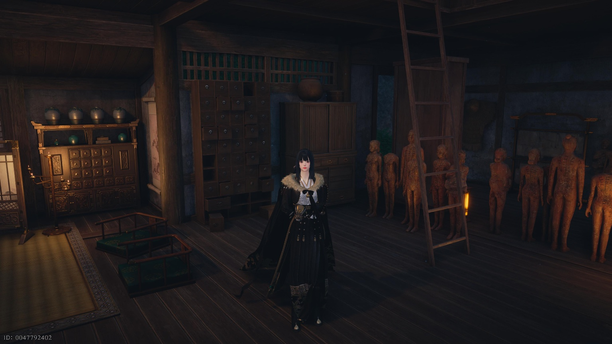
2번째 유물
활명의관 2층의 모든 상자를 열고, 지하로 내려가 낙신의 수기를 읽으면 됩니다.
활명의관 2층의 모든 상자를 열고, 지하로 내려가 낙신의 수기를 읽으면 됩니다.
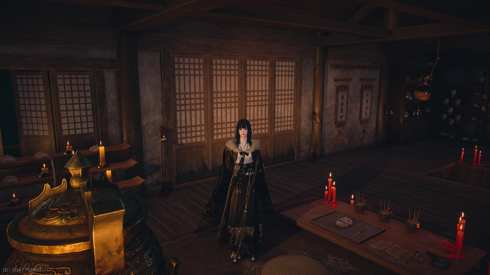
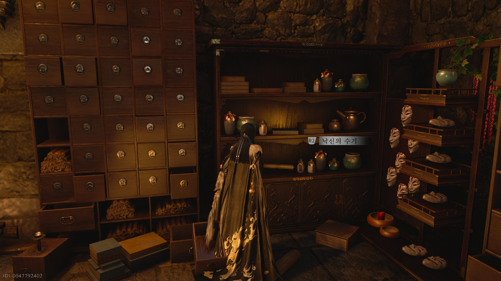
경계석 (2개)
지하 1층 초입
지하 1층 초입에 위치한 경계석을 활성화하세요.
지하 1층 초입에 위치한 경계석을 활성화하세요.
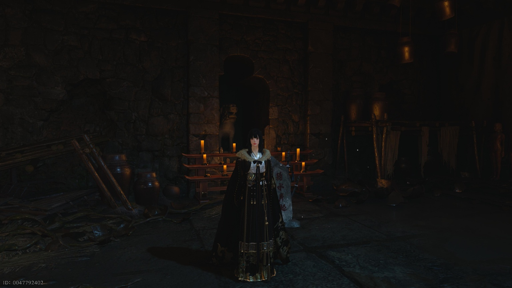
지하 2층 진수전 진입 전
지하 2층 진수전으로 진입하기 전 위치한 경계석을 활성화하세요.
지하 2층 진수전으로 진입하기 전 위치한 경계석을 활성화하세요.
상자 (13개)
상자는 모두 지하에 있습니다. 지도가 있는 동굴로 지도를 보고 따라가주세요.
1~2번째 상자
지하 진입 후 바로 발견 가능합니다.
지하 진입 후 바로 발견 가능합니다.
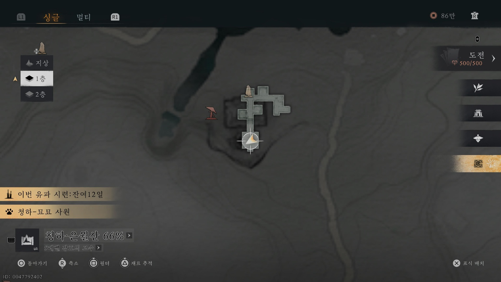
3번째 상자
지하 초입 후 정면 끝에서 왼쪽 작은 방에 위치합니다.
지하 초입 후 정면 끝에서 왼쪽 작은 방에 위치합니다.
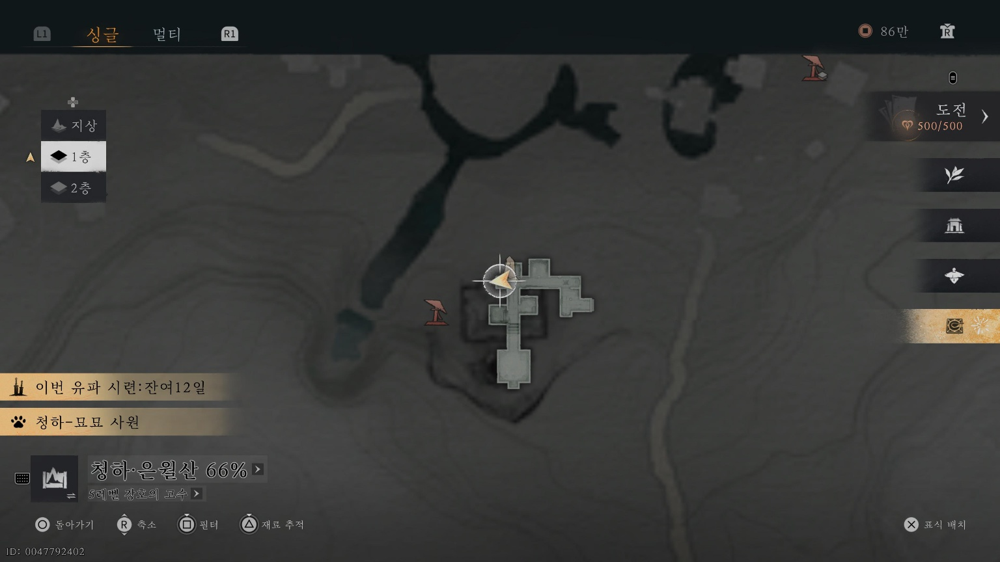
4번째 상자
지하 2층으로 빠지는 구멍에서 점프 후 획득하세요.
지하 2층으로 빠지는 구멍에서 점프 후 획득하세요.
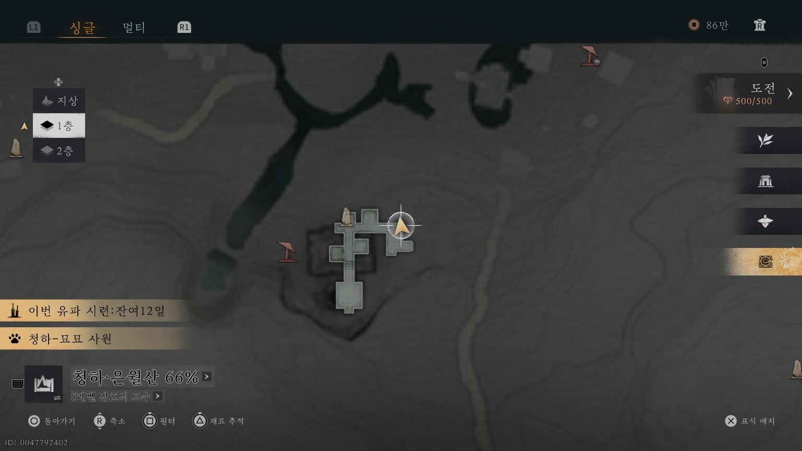
5번째 상자
지하 2층으로 빠지는 구멍에서 오른쪽으로 점프 후 획득 가능합니다.
지하 2층으로 빠지는 구멍에서 오른쪽으로 점프 후 획득 가능합니다.
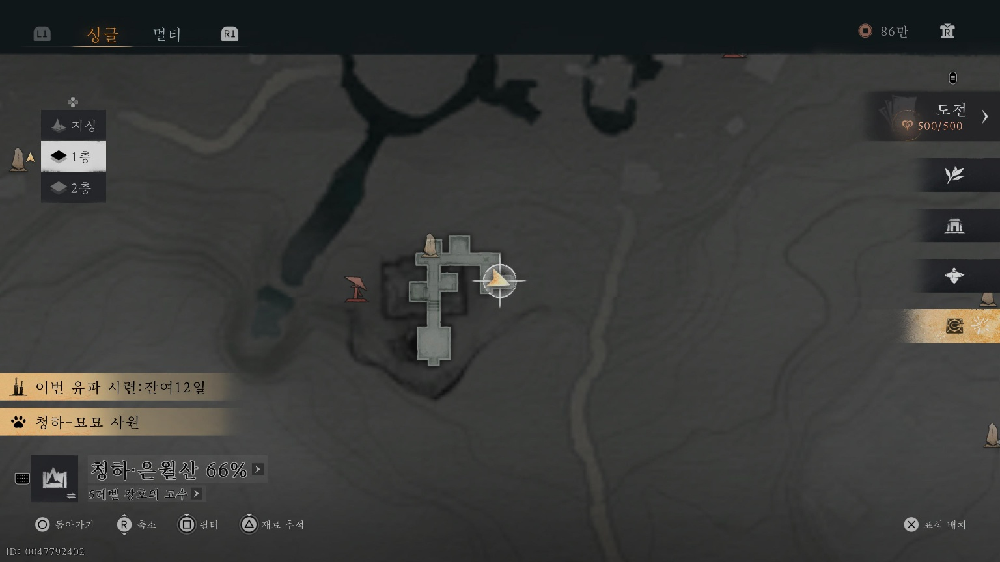
6번째 상자
지하 2층으로 내려오는 구멍으로 떨어져 바로 앞에서 획득하세요.
지하 2층으로 내려오는 구멍으로 떨어져 바로 앞에서 획득하세요.
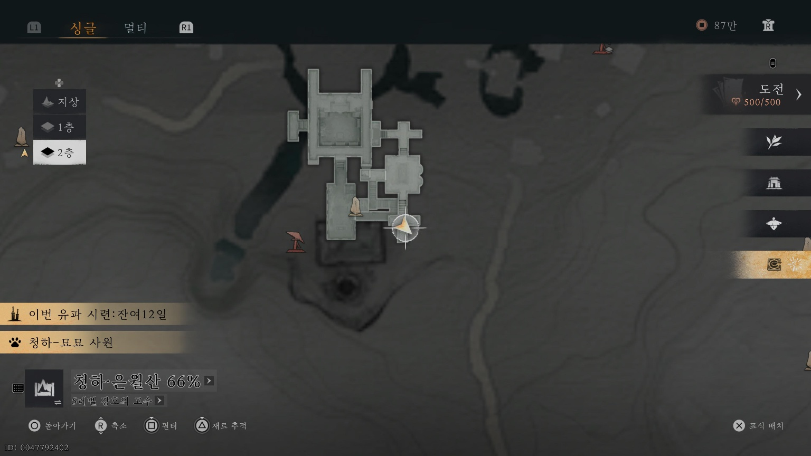
7번째 상자
지하 2층 중앙 큰방에서 획득 가능합니다. (낙신의 수기가 있는 곳)
지하 2층 중앙 큰방에서 획득 가능합니다. (낙신의 수기가 있는 곳)
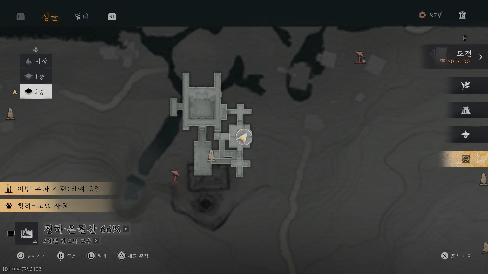
8번째 상자
지하 2층 아래 위치에서 획득하세요.
지하 2층 아래 위치에서 획득하세요.
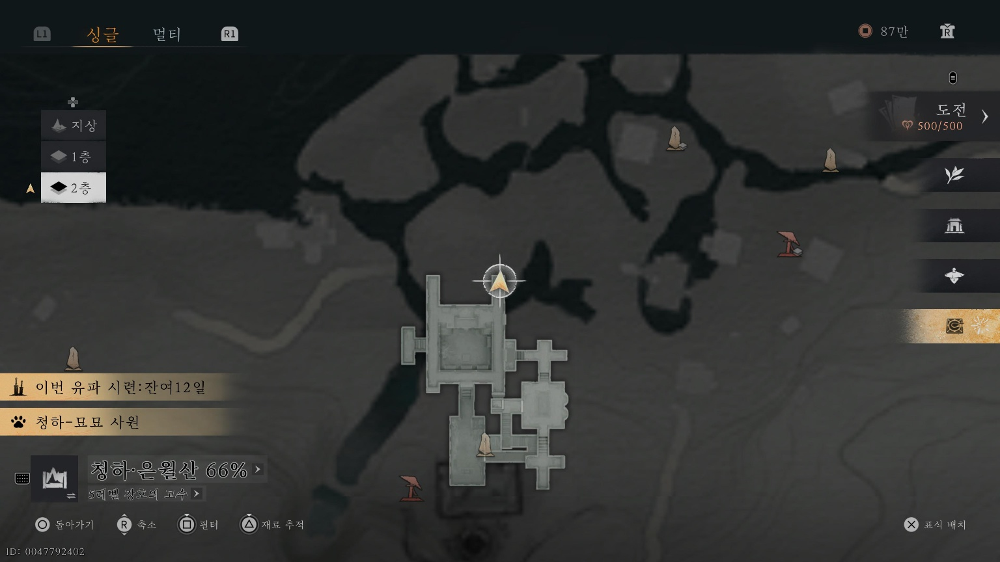
9번째 상자
지하 2층 아래 위치에서 획득하세요.
지하 2층 아래 위치에서 획득하세요.
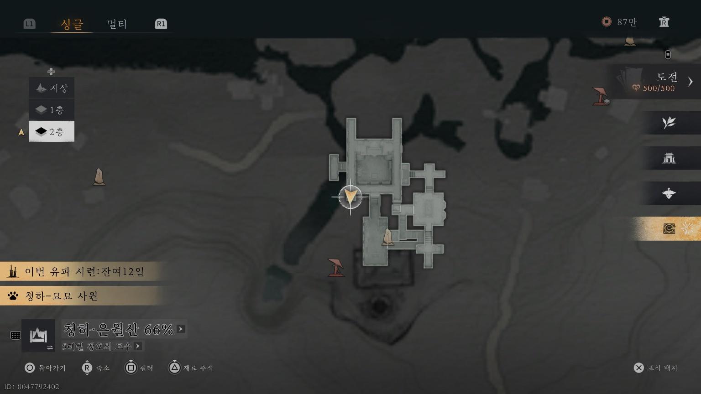
10번째 상자
지하 2층에서 무면인이 있는 쪽으로 내려오자마자 나무판 위에 상자가 있습니다.
지하 2층에서 무면인이 있는 쪽으로 내려오자마자 나무판 위에 상자가 있습니다.
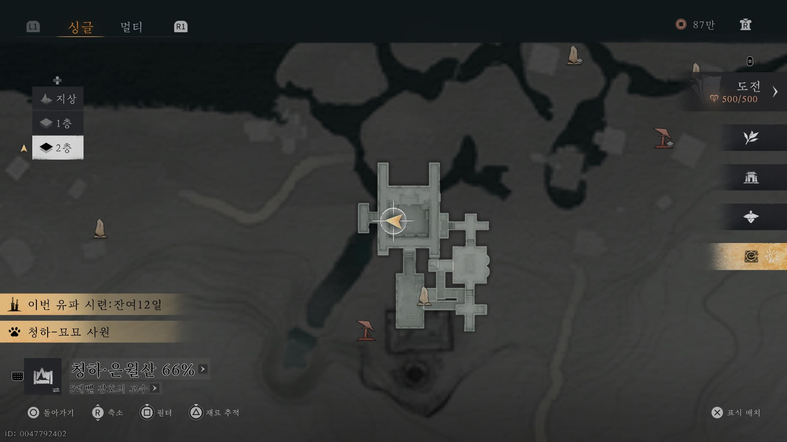
11~12번째 상자
진수전 입구 바로 옆에서 두 개의 상자를 획득할 수 있습니다.
진수전 입구 바로 옆에서 두 개의 상자를 획득할 수 있습니다.
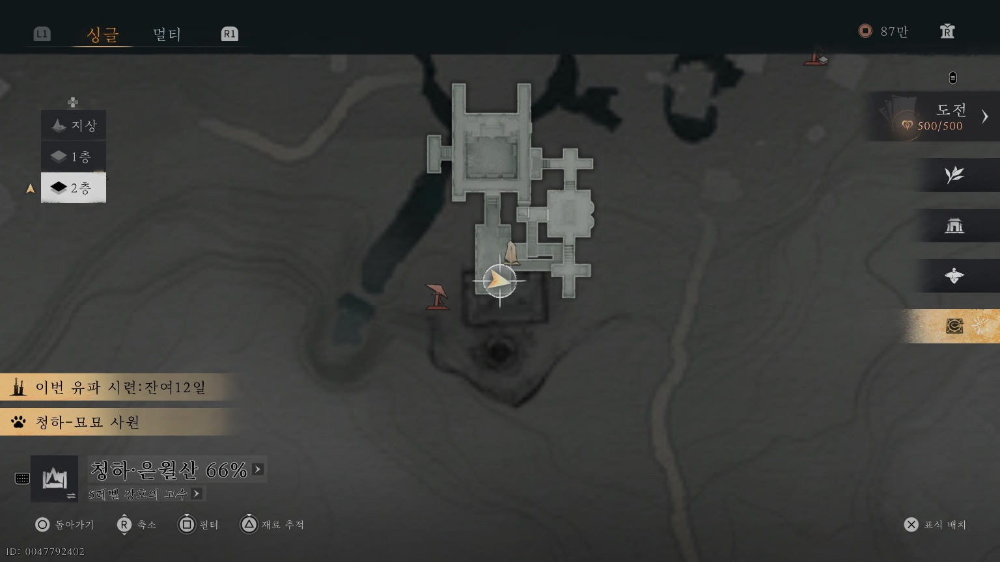
13번째 상자
정심을 지나 왼쪽 벽을 따라가다 2층 난간으로 가서 아래 장소에서 획득
정심을 지나 왼쪽 벽을 따라가다 2층 난간으로 가서 아래 장소에서 획득
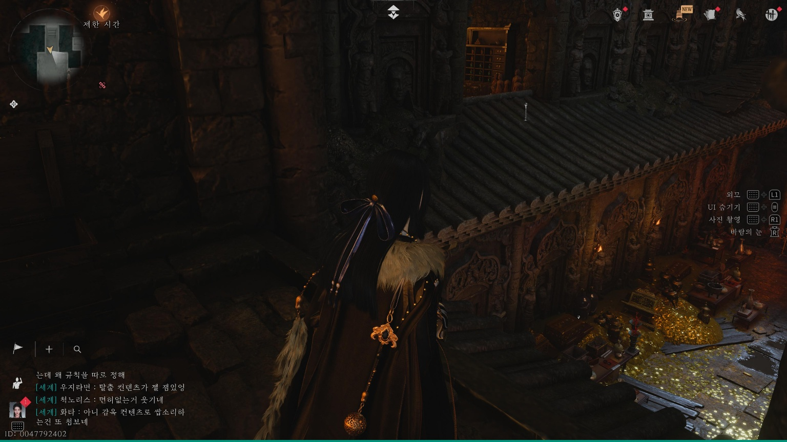
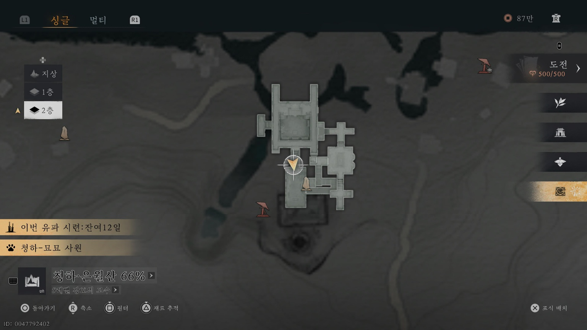